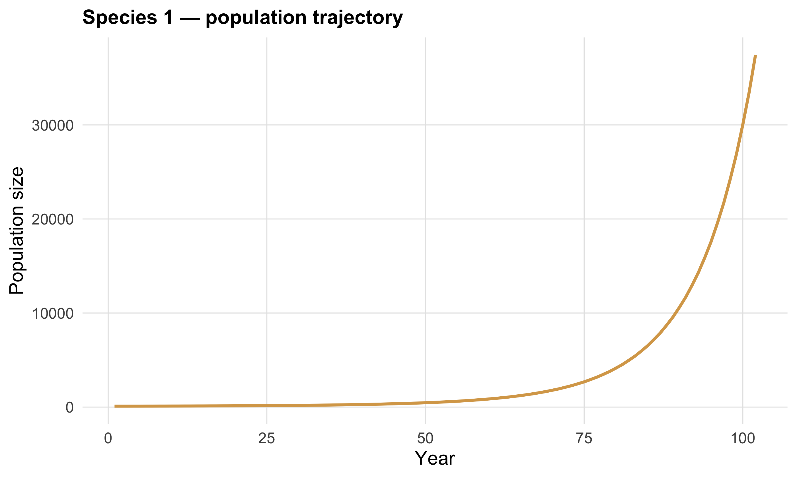
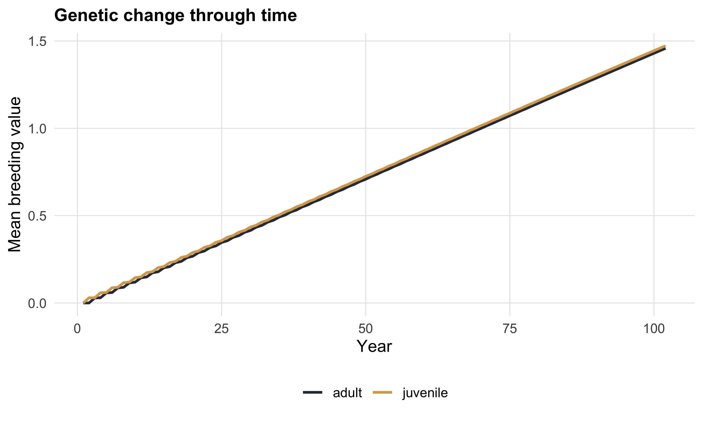
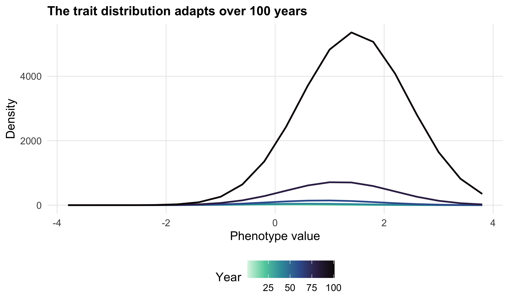
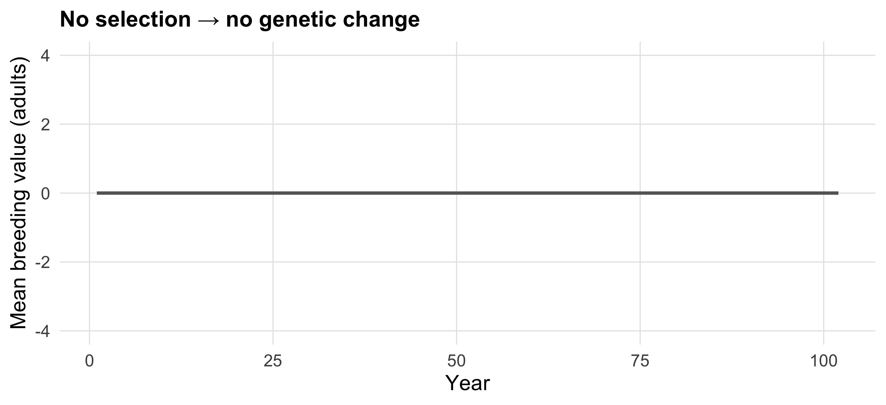

out <- MPM(
h2 = 0.2, # heritability of the selected trait
Vp = 1, # phenotypic variance
Beta = 0.15, # strength of selection (on the link scale)
Fe = species$F[1], # fertility
SA = species$SA[1], # adult survival
SJ = species$SJ[1], # juvenile survival
S0 = species$SJ[1], # newborn survival (here equal to SJ)
Y = species$gamma[1], # maturation rate
selectedrate = "Fe" # the vital rate selection acts on
)2 Your first model
NoteWhat you’ll be able to do
Run a full eco-evolutionary projection with one call to MPM(), find your way around its output, and turn that output into the three plots you will use for the rest of the workshop.
2.1 One function, one projection
The whole model is driven by a single function, MPM(). We hand it the four vital rates, the genetics (\(h^2\), \(V_P\)), and the selection strength (\(\beta\)). Let’s project species 1 (a fast, grass-like life history) with selection acting on fertility — the package defaults.
That’s it — a deterministic eco-evolutionary projection over 100 years. (We pass S0 separately because the model lets newborn survival differ from later juvenile survival; here we keep them equal.)
2.2 What came back
str(out, max.level = 1)List of 7
$ T_GEN : num [1, 1] 2.05
$ V_ADAPT : num 0.0147
$ LAMBDA0 : num 1
$ V : num 0.0146
$ properties_per_year :'data.frame': 102 obs. of 16 variables:
$ pheno_distribution : tibble [2,040 × 4] (S3: tbl_df/tbl/data.frame)
$ midpoint_phenotypic_class: num [1:20] -3.8 -3.4 -3 -2.6 -2.2 -1.8 -1.4 -1 -0.6 -0.2 ...Three pieces matter today:
properties_per_year— a tidy data frame with one row per year. It holds population sizeN, growth ratelambda, the realised variancesVa/Vp, and the mean breeding value of adults and juveniles (M_EBVSA,M_EBVSJ). This is your demographic and evolutionary timeline in one table.pheno_distribution— the full trait distribution: how many individuals sit in each phenotype class, every year. This is what lets us watch the trait evolve.- The scalars
T_GEN(generation time),LAMBDA0(initial growth rate) andV(the mean change in breeding value per year — a realised adaptation rate).
head(out$properties_per_year[, c("year", "N", "lambda", "Va", "M_EBVSA", "M_EBVSJ")]) year N lambda Va M_EBVSA M_EBVSJ
1 1 100.0000 1.005505 0.2000000 -1.894986e-16 -1.684790e-16
2 2 101.0269 1.007514 0.2000714 -2.086487e-16 2.968888e-02
3 3 101.1260 1.007705 0.2000005 2.861680e-02 2.997218e-02
4 4 102.5203 1.009637 0.2000800 2.992273e-02 5.832399e-02
5 5 102.7188 1.009907 0.2000004 5.730212e-02 5.988126e-02
6 6 104.4693 1.011767 0.2000790 5.978725e-02 8.702244e-022.3 Plot 1 — the population grows
ggplot(out$properties_per_year, aes(year, N)) +
geom_line(linewidth = 0.9, colour = species_pal["1"]) +
labs(x = "Year", y = "Population size", title = "Species 1 — population trajectory")
WarningHeads-up — exponential growth is by design
The model has no density dependence: selection raises \(\lambda\) above 1, so the population explodes. We care about the trait, not the absolute numbers. If you want a constant-size baseline, set enforce_initial_lambda1 = TRUE (it tunes fertility so the starting \(\lambda = 1\)).
2.4 Plot 2 — the trait evolves
Here is the evolution half of the story: the mean breeding value climbs over time as selection favours individuals with higher trait values.
ImportantYour turn — predict first
Before running the next chunk: with positive selection on fertility, do you expect the mean breeding value to go up, down, or stay flat? Should adults and juveniles differ?
out$properties_per_year |>
select(year, adult = M_EBVSA, juvenile = M_EBVSJ) |>
pivot_longer(-year, names_to = "age_class", values_to = "mean_bv") |>
ggplot(aes(year, mean_bv, colour = age_class)) +
geom_line(linewidth = 0.9) +
scale_colour_manual(values = age_pal, name = NULL) +
labs(x = "Year", y = "Mean breeding value", title = "Genetic change through time")
2.5 Plot 3 — the whole distribution sliding
Means hide the action. The trait distribution itself slides to the right as the population adapts. Plotting a few yearly snapshots makes the movement visible.
out$pheno_distribution |>
filter(year %in% seq(1, 101, by = 20)) |>
ggplot(aes(phenotypic_midvalue, density, colour = year, group = year)) +
geom_line(linewidth = 0.8) +
scale_colour_viridis_c(option = "mako", direction = -1, name = "Year") +
labs(x = "Phenotype value", y = "Density",
title = "The trait distribution adapts over 100 years")
TipKey idea
properties_per_year is your summary timeline; pheno_distribution is the full picture. Almost every figure in this workshop is one of these two objects, reshaped and plotted.
2.6 Your turn — drive it yourself
ImportantExercise
- Re-run the projection for the albatross (species 5) instead of the grass. Which
species$columns change? - Then set
Beta = 0and re-run. Predict what the breeding-value plot will look like before you draw it.
CautionSolution
alba <- MPM(
h2 = 0.2, Vp = 1, Beta = 0.15,
Fe = species$F[5], SA = species$SA[5], SJ = species$SJ[5],
S0 = species$SJ[5], Y = species$gamma[5], selectedrate = "Fe"
)
no_sel <- MPM(
h2 = 0.2, Vp = 1, Beta = 0, # selection switched off
Fe = species$F[5], SA = species$SA[5], SJ = species$SJ[5],
S0 = species$SJ[5], Y = species$gamma[5], selectedrate = "Fe"
)
no_sel$properties_per_year |>
ggplot(aes(year, M_EBVSA)) +
geom_line(linewidth = 0.9, colour = "grey40") +
ylim(-4, 4) +
labs(x = "Year", y = "Mean breeding value (adults)",
title = "No selection \u2192 no genetic change")
With Beta = 0 the mean breeding value stays flat: no selection, no adaptation. This is the sanity check every eco-evolutionary model should pass.